Code
# Load the packages
import pandas as pd
import numpy as np
import matplotlib.pyplot as plt
import matplotlib.dates as mdates
from scipy.interpolate import interp1d
import statsmodels.api as smThe aim of this project is to analyse “How do macroeconomic shocks such as Monetary policy, GDP, Consumption, Investment and Inflation affect the Euro-aera gouvernement zero-coupon yield curve across several maturities?”. The objective is to understand not only the overall impact of these shocks on the Euro-area yield curve, but also how their effects vary along the term structure for short, intermediate and long maturities.
Analyzing how macroeconomic shocks impact the Euro-area yield curve across different maturities is crucial for both policymakers and investors. For the European Central Bank (ECB), the yield curve plays a central role in the transmission of monetary policy. Indeed, one of the main channel of monetary policy transmission operates through the yield curve, as policy decisions influence financing conditions at various horizons.
From a market perspective, understanding how macroeconomic shocks propagate along the yield curve helps investors to anticipate changes in yield and risk preminum (credit spread). This, in turn, leads to better portfolio allocation decisions and more effective risk management strategies.
The existing economic literature provides strong evidence that macroeconomic conditions are closely linked to the shape and dynamics of the Euro-area yield curve. Odendahl et al. (2023) show that monetary policy shocks in the euro area affect the entire yield curve, influencing both short and long-term interest rates. Moreover, Minoiu, Schneider, and Wei (2023) emphasize that a steeper yield curve can signal stronger GDP growth, as it enhances bank profitability and stimulates economic activity. Earlier evidence from Reserve Bank of Australia (1992) also suggests that a steeper yield curve is associated with higher future investment.
Therefore, this project is a data-driven analysis conducted using Python and its goal is to assess how macroeconomic shocks directly affect the Euro-area government yield curve across several maturities. The project is structured into two main parts. The first part focuses on the data analysis process, including data collection, data preparation, data exploration, and empirical analysis. The second part presents the main findings and concludes the study.
This study relies on a combination of macroeconomic and financial data of the Euro-area.
Firstly, this data analysis will rely of several financial datasets to extract data about the yield curve at several maturities. To do so we used the yield curve data from the European Central Bank and are based on Euro-aera gouvernement bond yields European Central Bank (2025c). The spot rates are constructed using the ECB Svensson yield curve model with continuous compounding. We use zero-coupon spot rates derived from nominal gouvernement bonds, including all issuers and all credit ratings for the Euro-aera. To have a more borad picture, we decided to extract this yield curve data with several maturities 3-months, 2-years, 5-year and 30 year. They are daily frequency data from the 6th September 2004 to 3rd November 2025. After having, extract the yield curve data we have merged these 4 databases.
Secondly, this analysis relies on macroeconomic data. Therefore, we first have decided to add the HICP Index, more commonly called the “Headline Inflation”, which is a mesure of price stability of the Euro-aera for the purpose of the monetary policy of ECB Eurostat (2025b). We extract the HICP Index from the Eurostat Website with a monthly frequency data(annual rate of change). We have only kept the HICP Index for the Euro-aera from January 1997 to October 2025.
For macroeconomic variables, we also have included Consumption and Investment Growth Indicators with annual frequency growth from Eurostat. We also have included the Gross Domestic product (GDP) growth with a quaterly frequency of the Euro-aera also from Eurostat (2025a).
We will also be interested to see the effect of monetary policies on the yield curve. Therefore, we will also include the 3 key interest rates of the European Central Bank, which constitute the main conventional tool for monetary policy. These policy rates are reviewed and, if necessary, adjusted by the ECB Gouverning Council at regular monetary policy meetings, typically held every six weeks. We have extracted diretcly from the website of the European Central Bank these 3 interest rates : Deposit Facility, Main Refinancing Operations and Marginal Lending Facility from January 1999 to June 2025.
Finally, we decided to add the Composite Indicator of Systemic Stress - CISS of the Euro-aera with a daily frequency from January 1999 to November 2025 extracted from European Central Bank (2025a). This indicator is a market-based measure of systemic financial stress developed by Holló, Kremer, and Lo Duca (2012). We also have added the last variable, the Exchange Rate USD/EUR with a daily frequnency from European Central Bank (2025b) from 1st February 1999 to 12th December 2025.
After having found and extract all the relevant variables to respond accurateley to our problematic. We need now to merge and clean the data. The main challenge encountred here was to merge all these financial and macroeconomic indicators that have different data frequncies. After having compiling all these 14 databases, this results to a final and complete database from the 1st January 1997 to 12th December 2025, with a total of 14 variables and 6,732 observations.
(The entire Python code relating to data compilation and preparation can be found in the ‘Data Preparation’ folder of the zip file. This folder contains a Quarto document with the code and the final and clean database.)
Before we proceed with the analysis, we conduct a preliminary data exploration. This step provides us with initial insights into the data.
# Load the packages
import pandas as pd
import numpy as np
import matplotlib.pyplot as plt
import matplotlib.dates as mdates
from scipy.interpolate import interp1d
import statsmodels.api as sm#The access path must be modified
df = pd.read_csv(r"C:\Users\Victoria\Downloads\full_data (1).csv")#Make the title cleaner
rename_dict = {
"investment growth_1": "investment_growth",
"consumption_2": "consumption",
"gdp_growth_3": "gdp_growth",
"hicp_4": "hicp",
"euro_dol_5" : "euro_dol",
"ciss_6" : "ciss",
"2 year maturity ECB": "yield_2y",
"3 month maturity ECB": "yield_3m",
"30 year maturity ECB": "yield_30y",
"5-year maturity ECB": "yield_5y",
"Deposit rate ECB": "deposit_rate_ecb",
"Main refincing rate ECB": "main_refinancing_rate_ecb",
"Marginal lending rate ECB": "marginal_lending_rate_ecb",
"taux yield 10 maturity": "yield_10y"
}
data_clean = df.rename(columns=rename_dict)# To display the first rows
print(data_clean.head())
print(data_clean.info())
print(data_clean.shape) date investment_growth consumption gdp_growth hicp euro_dol \
0 1997-01-01 NaN NaN NaN 2.0 NaN
1 1997-02-01 NaN NaN NaN 1.8 NaN
2 1997-03-01 NaN NaN NaN 1.6 NaN
3 1997-04-01 NaN NaN NaN 1.3 NaN
4 1997-05-01 NaN NaN NaN 1.4 NaN
ciss yield_2y yield_3m yield_30y yield_5y deposit_rate_ecb \
0 NaN NaN NaN NaN NaN NaN
1 NaN NaN NaN NaN NaN NaN
2 NaN NaN NaN NaN NaN NaN
3 NaN NaN NaN NaN NaN NaN
4 NaN NaN NaN NaN NaN NaN
main_refinancing_rate_ecb marginal_lending_rate_ecb yield_10y
0 NaN NaN NaN
1 NaN NaN NaN
2 NaN NaN NaN
3 NaN NaN NaN
4 NaN NaN NaN
<class 'pandas.core.frame.DataFrame'>
RangeIndex: 6732 entries, 0 to 6731
Data columns (total 15 columns):
# Column Non-Null Count Dtype
--- ------ -------------- -----
0 date 6732 non-null object
1 investment_growth 25 non-null float64
2 consumption 25 non-null float64
3 gdp_growth 25 non-null float64
4 hicp 346 non-null float64
5 euro_dol 2719 non-null float64
6 ciss 542 non-null float64
7 yield_2y 5411 non-null float64
8 yield_3m 5411 non-null float64
9 yield_30y 5411 non-null float64
10 yield_5y 5411 non-null float64
11 deposit_rate_ecb 67 non-null float64
12 main_refinancing_rate_ecb 46 non-null float64
13 marginal_lending_rate_ecb 67 non-null float64
14 yield_10y 5411 non-null float64
dtypes: float64(14), object(1)
memory usage: 789.0+ KB
None
(6732, 15)#To display the last row
print(data_clean.tail(1)) date investment_growth consumption gdp_growth hicp euro_dol \
6731 2025-12-12 NaN NaN NaN NaN 1.1731
ciss yield_2y yield_3m yield_30y yield_5y deposit_rate_ecb \
6731 NaN NaN NaN NaN NaN NaN
main_refinancing_rate_ecb marginal_lending_rate_ecb yield_10y
6731 NaN NaN NaN Now, after having a look to the dimension of the data, we can start with the desciptive statistics between the 3-month matrurity and the 30-year maturity yields.
# Columns to select
cols = ['yield_3m', 'yield_30y']
print("\nDescriptive Statistics :")
print(data_clean[cols].describe())
# Missing Values
print("\nNA :")
print(data_clean[cols].isna().sum())
for col in cols:
print(f"\nDetails for {col}:")
print("Mean:", data_clean[col].mean())
print("Standard Deviation:", data_clean[col].std())
print("Min:", data_clean[col].min())
print("Max:", data_clean[col].max())
Descriptive Statistics :
yield_3m yield_30y
count 5411.000000 5411.000000
mean 1.040512 3.249357
std 1.562262 1.322352
min -0.832957 0.521157
25% -0.412337 2.144026
50% 0.462681 3.553639
75% 2.234377 4.365858
max 4.291189 5.837935
NA :
yield_3m 1321
yield_30y 1321
dtype: int64
Details for yield_3m:
Mean: 1.0405118892995748
Standard Deviation: 1.5622624306275812
Min: -0.832957
Max: 4.291189
Details for yield_30y:
Mean: 3.2493574614673815
Standard Deviation: 1.3223521794772728
Min: 0.521157
Max: 5.837935On average, long-term rates are higher than short-term rates, meaning that the yield curve tends to increase as the matuirty increases. This is a coherent result, as investors demand a risk premium as the maturity increases. We also observe higher volatility at long maturities compared to short maturities (standard errors).
To pursue the EDA, we decided to plot the most recent yield curve at 5 different maturities : 30-year, 10-year, 5-year, 2-year and 3 month.
# Last row with data on the yield
row = data_clean.iloc[-15]
maturities = ['yield_3m', 'yield_2y', 'yield_5y', 'yield_10y', 'yield_30y']
x = np.array([0.25, 2, 5, 10, 30], dtype=float)
rates = pd.to_numeric(row[maturities], errors="coerce").to_numpy(dtype=float)
date_str = pd.to_datetime(row["date"], errors="coerce").strftime("%Y-%m-%d")
# Interpolation
f = interp1d(x, rates, kind="cubic")
xnew = np.linspace(x.min(), x.max(), 200)
ynew = f(xnew)
plt.figure(figsize=(8,5))
plt.plot(xnew, ynew, label="Yield Curve")
plt.scatter(x, rates, color="red", s=60, label="Observed points")
plt.xticks(x, ['0.25', '2', '5', '10', '30'])
plt.xlabel("Maturity (years)")
plt.ylabel("Yield (%)")
plt.title(f"Yield Curve on {date_str}")
plt.legend()
plt.grid(True)
plt.show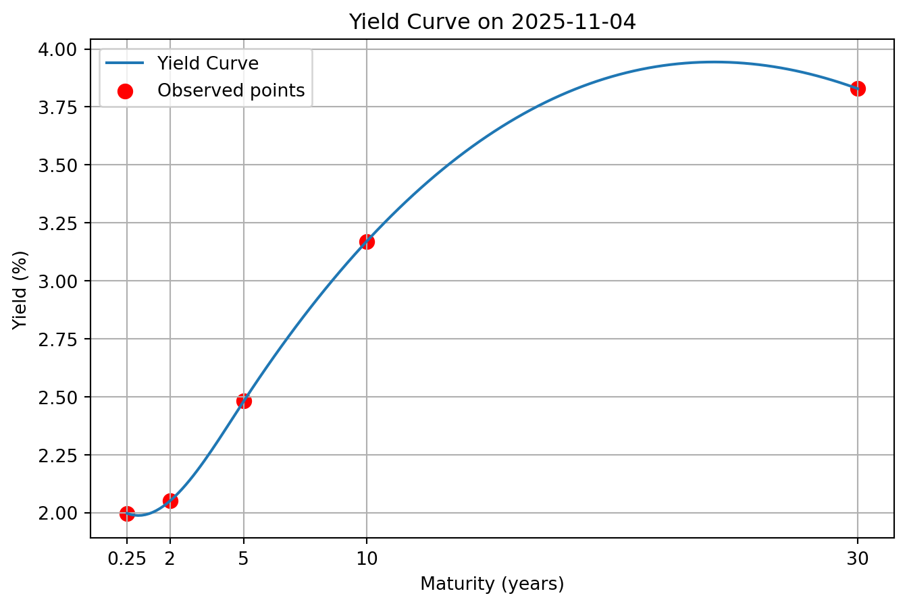
As mentioned before, we observe an increasing yield curve, which is coherent given that a high risk premium is required for longer maturities.
We can also search in the data directly to find out if we had an entirely inverted yield curve at a specific date. According to the following code, as we do not have data with a fully inverted yield curve, hence we have selected the difference between the 30-year and 3-month yields.
data_clean["date"] = pd.to_datetime(data_clean["date"], errors="coerce")
data_clean = data_clean.sort_values("date").reset_index(drop=True)
maturity_map = {
0.25: "yield_3m",
2.0: "yield_2y",
5.0: "yield_5y",
10.0: "yield_10y",
30.0: "yield_30y",
}
x_numeric = np.array(sorted(maturity_map.keys()))
rate_cols = [maturity_map[x] for x in x_numeric]
#Test to find a precise date at which we have an entirely inverted yield curve and if not we consider the differece between the 30-year and the 3 months
cond_full_inversion = (
(data_clean["yield_30y"] < data_clean["yield_10y"]) &
(data_clean["yield_10y"] < data_clean["yield_5y"]) &
(data_clean["yield_5y"] < data_clean["yield_2y"]) &
(data_clean["yield_2y"] < data_clean["yield_3m"])
)
inverted_full = data_clean.loc[cond_full_inversion].copy()
data_clean["slope_30y_3m"] = data_clean["yield_30y"] - data_clean["yield_3m"]
inverted_30y_3m = data_clean.loc[data_clean["slope_30y_3m"] < 0].copy()
print("Number of dates in which we have a entirely inverted yield curve(30<10<5<2<3m):", len(inverted_full))
print("Number at which we have 30y < 3m (30y-3m < 0):", len(inverted_30y_3m))
#As we have no fully inverted yield curve, we plot the one by doing the differenrece between 30y and 3 months
if len(inverted_30y_3m) == 0:
print("\nNo date found for 30years < 3months.")
else:
# Choice : we selected the one that is the more inverted
row = inverted_30y_3m.loc[inverted_30y_3m["slope_30y_3m"].idxmin()]
rates = row[rate_cols].astype(float).values
# Interpolation
f = interp1d(x_numeric, rates, kind="cubic")
xnew = np.linspace(x_numeric.min(), x_numeric.max(), 300)
ynew = f(xnew)
plt.figure(figsize=(8, 5))
plt.plot(xnew, ynew, label="Inverted Yield Curve")
plt.scatter(x_numeric, rates, color="red", label="Observed points")
plt.xticks(x_numeric, [str(x) for x in x_numeric])
plt.xlabel("Maturity (Years)")
plt.ylabel("Yield (%)")
plt.title(
f"Yield Curve on {row['date'].date()} "
)
plt.legend()
plt.grid(True)
plt.show()
print("\nDate plot:", row["date"].date())
print(row[["yield_3m", "yield_2y", "yield_5y", "yield_10y", "yield_30y", "slope_30y_3m"]])Number of dates in which we have a entirely inverted yield curve(30<10<5<2<3m): 0
Number at which we have 30y < 3m (30y-3m < 0): 284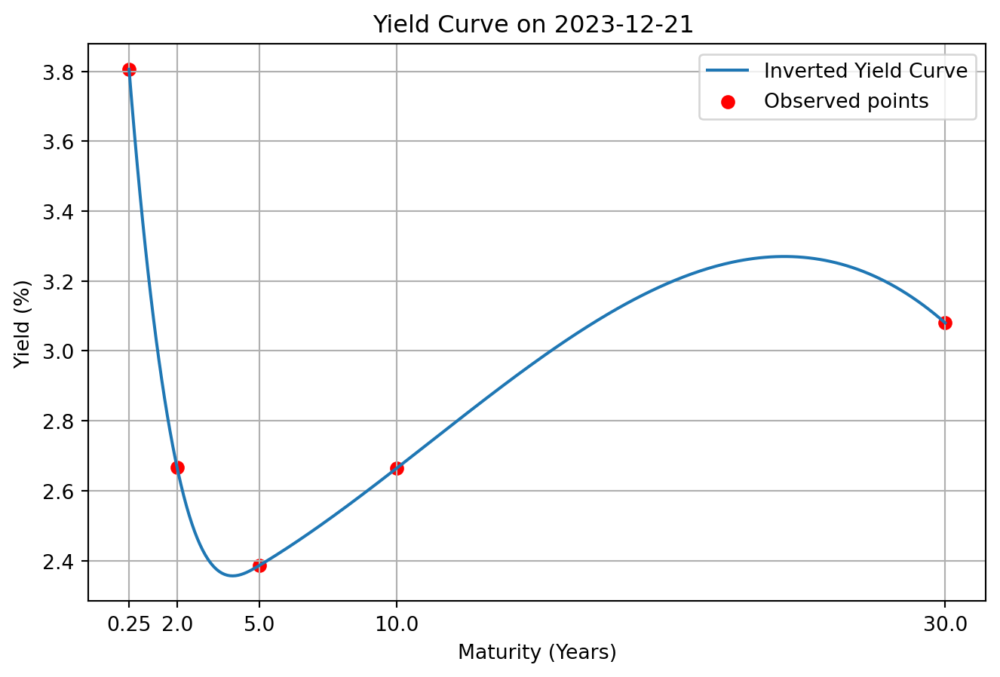
Date plot: 2023-12-21
yield_3m 3.805919
yield_2y 2.666764
yield_5y 2.386147
yield_10y 2.664008
yield_30y 3.080127
slope_30y_3m -0.725792
Name: 6184, dtype: object# Maturities considered
maturities = ['yield_3m', 'yield_5y', 'yield_30y']
# Labels
legend_labels = ['3 months', '5 years', '30 years']
plt.figure(figsize=(12,6))
# Histogram
for col, label in zip(maturities, legend_labels):
plt.hist(data_clean[col], bins=30, alpha=0.5, label=label)
plt.xlabel('Yield (%)')
plt.ylabel('Frequency')
plt.title('Distribution of Selected ECB Yields')
plt.legend()
plt.show()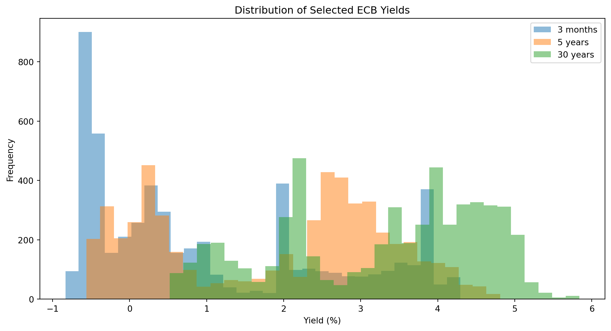
As we can see here, short-term yield indeed have a lower return than those with a 5-year or 30-year maturity. It is also notable that 3-month bonds can have a negative yield. This reflects periods of highly expansionary monetary policy, during which the central bank drives short-term interest rates below zero.
Another relevant analysis to perform is to analyse the spread between the different rates directly from the yield curves. The following code computes several relevant spreads.
data_clean["spread_30y_vs_3m"] = data_clean["yield_30y"] - data_clean["yield_3m"]
data_clean["spread_10y_vs_3m"] = data_clean["yield_10y"] - data_clean["yield_3m"]
data_clean["spread_5y_vs_3m"] = data_clean["yield_5y"] - data_clean["yield_3m"]
data_clean["spread_2y_vs_3m"] = data_clean["yield_2y"] - data_clean["yield_3m"]
data_clean[col] = pd.to_numeric(data_clean[col], errors="coerce")
spread_cols = [
"spread_2y_vs_3m",
"spread_5y_vs_3m",
"spread_10y_vs_3m",
"spread_30y_vs_3m"
]
spread_stats = data_clean[spread_cols].describe()
print(spread_stats) spread_2y_vs_3m spread_5y_vs_3m spread_10y_vs_3m spread_30y_vs_3m
count 5411.000000 5411.000000 5411.000000 5411.000000
mean 0.332322 0.821806 1.503100 2.208846
std 0.509731 0.837223 1.101318 1.221395
min -1.281256 -1.502078 -1.153339 -0.725792
25% 0.056073 0.304500 0.653199 1.405469
50% 0.222796 0.675730 1.376941 2.254077
75% 0.647313 1.453799 2.371697 3.176479
max 2.006964 2.837062 3.757634 4.721477We can see that on average, long-term rates exceed short-term rates, indicating an upward-sloping yield curve. The spread 30y–3m is around 220 bps, against 33 bps. Additionnaly, the volatility of yield spreads increases with maturity.
An interesting analysis to do is to look to the data to determine if during specific times, we had negative spread and their proportion.
inversion_share = ((data_clean[spread_cols] < 0).mean() * 100).round(2)
print(inversion_share)spread_2y_vs_3m 12.76
spread_5y_vs_3m 8.39
spread_10y_vs_3m 5.57
spread_30y_vs_3m 4.22
dtype: float64plt.figure(figsize=(8,5))
plt.bar(
inversion_share.index,
inversion_share.values
)
plt.ylabel("Percentage of time (%)")
plt.xlabel("Yield curve spreads")
plt.title("Frequency of Yield Curve Inversions")
#Loop and Histogram
for i, value in enumerate(inversion_share.values):
plt.text(i, value + 0.3, f"{value}%", ha='center')
plt.grid(axis="y", linestyle="--", alpha=0.6)
plt.tight_layout()
plt.show()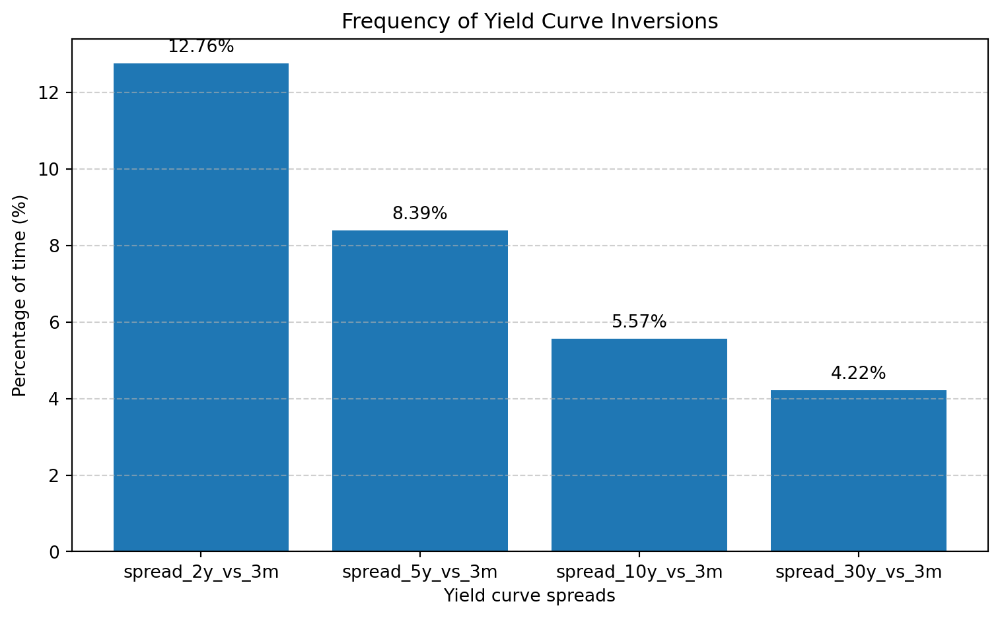
Yield curve inversions are relatively infrequent in the Euro-area and occur primarily at short and medium maturities. The 2-year and 3-month spread is negative about 12.76% of the time, while inversions become increasingly rare at longer maturities, reaching less than 5% frequency for the 30-year minus 3-month spread.
Now, we will have a look at the macroeconomic variables of the database.
# Filter the valid rows without NA
df_plot = data_clean[['date', 'gdp_growth', 'hicp', 'investment_growth', 'consumption']].dropna()
# Plotting
plt.figure(figsize=(12,6))
plt.plot(df_plot['date'], df_plot['gdp_growth'], label='GDP Growth', color='blue')
plt.plot(df_plot['date'], df_plot['hicp'], label='HICP', color='red')
plt.plot(df_plot['date'], df_plot['investment_growth'], label='Investment Growth', color='green')
plt.plot(df_plot['date'], df_plot['consumption'], label='Consumption Growth', color='orange')
plt.xlabel('Date')
plt.ylabel('Value')
plt.title('Macroeconomic Variables over Time')
plt.grid(True)
plt.legend()
# Display only the years
plt.gca().xaxis.set_major_locator(mdates.YearLocator()) # un tick par année
plt.gca().xaxis.set_major_formatter(mdates.DateFormatter('%Y'))
plt.xticks(rotation=45)
plt.tight_layout()
plt.show()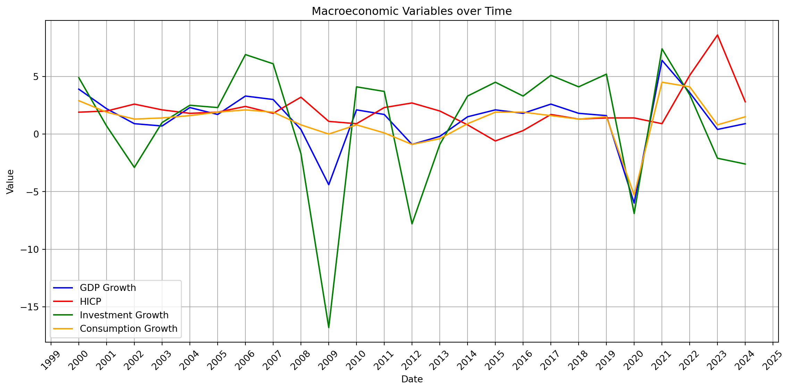
We observe a significant decrease in investment during the 2008 financial crisis. A second drop in investment growth occurred around 2012, coinciding with the European sovereign debt crisis. During this period, financial conditions deteriorated and there were notable differences in sovereign bond spreads between countries, for example between Germany and Greece. Such high spreads reflected severe market stress and limited access to financing, which had a significant impact on investment decisions. Finally, the COVID-19 crisis in 2020 also led to a clear decline in GDP, consumption, and investment growth due to the sudden slowdown in economic activity.
df_plot = data_clean[['date',
'deposit_rate_ecb',
'main_refinancing_rate_ecb',
'marginal_lending_rate_ecb'
]].dropna()
plt.figure(figsize=(14,7))
plt.plot(df_plot['date'], df_plot['deposit_rate_ecb'], label='Deposit Rate', linewidth=2)
plt.plot(df_plot['date'], df_plot['main_refinancing_rate_ecb'], label='Refinancing Rate', linewidth=2)
plt.plot(df_plot['date'], df_plot['marginal_lending_rate_ecb'], label='Marginal Lending Rate', linewidth=2)
plt.title('ECB Key Interest Rates Over Time')
plt.xlabel('Year')
plt.ylabel('Rate (%)')
plt.grid(True)
plt.legend()
plt.gca().xaxis.set_major_locator(mdates.YearLocator())
plt.gca().xaxis.set_major_formatter(mdates.DateFormatter('%Y'))
plt.xticks(rotation=45)
plt.tight_layout()
plt.show()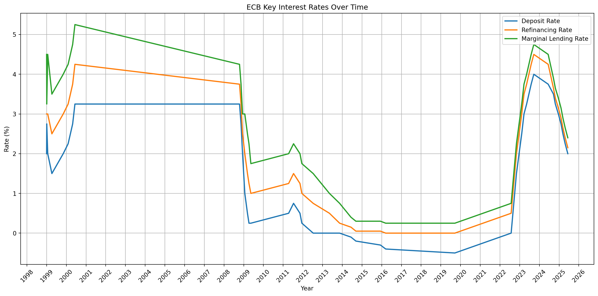
Plotting the three key interest rates of the European Central Bank provides an overview of the different monetary policy stances over time. We observe a sharp decline in interest rates following the 2008 financial crisis, reflecting an expansionary monetary policy aimed at supporting aggregate demand and economic activity. By contrast, in 2022 we observe a sharp increase in all three rates, corresponding to a shift toward a restrictive monetary policy designed to contain the strong inflationary pressures that emerged during that period.
We will also add an overview of the evolution of the EUROand the CISS (Composite Indicator of Systemic Stress) of the Euro-aera over time.
# keep only EURO\USD and Date
df_plot = data_clean[['date', 'euro_dol']].dropna()
df_plot = df_plot.set_index('date')
# Monthlx frequancy fron daily frequency data
df_monthly = df_plot.resample('M').mean()
# Plot
plt.figure(figsize=(12,6))
plt.plot(df_monthly.index, df_monthly['euro_dol'], label='EURO_USD (monthly average)', color='blue')
plt.xlabel('Date')
plt.ylabel('Value')
plt.title('EURO_USD (Monthly)')
plt.grid(True)
plt.legend()
# Display
plt.gca().xaxis.set_major_locator(mdates.YearLocator())
plt.gca().xaxis.set_major_formatter(mdates.DateFormatter('%Y'))
plt.xticks(rotation=45)
plt.tight_layout()
plt.show()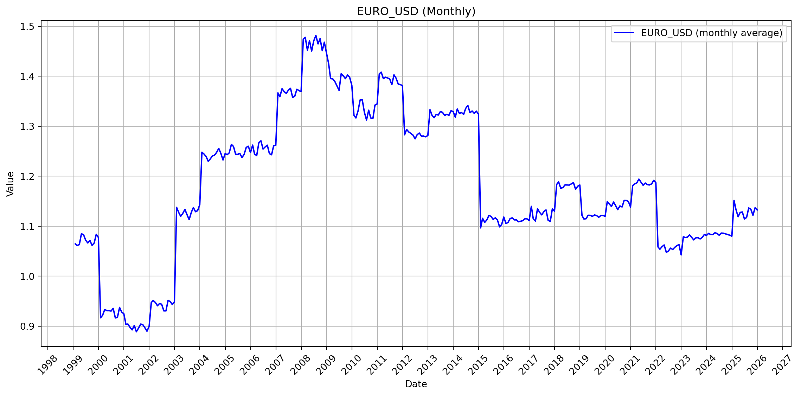
According to Holló, Kremer, and Lo Duca (2012), the CISS indicator is normalised between 0 and 1, with higher values indicating higher levels of systemic stress. Periods of severe systemic stress are empirically associated with values above 0.5. We can observe on the folowing plot a very high tendancy of level of systemic risk during the financial crisis of 2008 and in 2012 corresponding to the European Sovereign debt crisis.
# Keep only date and ciss
df_plot = data_clean[['date', 'ciss']].dropna()
df_plot = df_plot.set_index('date')
# Daily frequancy to Monthly Frequency
df_monthly = df_plot.resample('M').mean()
# Plot
plt.figure(figsize=(12,6))
plt.plot(df_monthly.index, df_monthly['ciss'], label='CISS (monthly average)', color='blue')
plt.xlabel('Date')
plt.ylabel('Value')
plt.title('Composite Indicator of Systemic Stress (Monthly)')
plt.grid(True)
plt.legend()
# Diplay
plt.gca().xaxis.set_major_locator(mdates.YearLocator())
plt.gca().xaxis.set_major_formatter(mdates.DateFormatter('%Y'))
plt.xticks(rotation=45)
plt.tight_layout()
plt.show()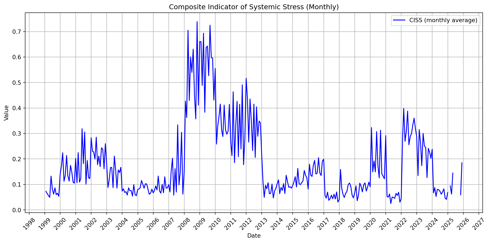
We can now add in the EDA some first insight of the potential relationship between the macroeconomic variables and the yields.
df = data_clean.copy()
macro_cols = ["investment_growth", "consumption", "gdp_growth", "hicp"]
yields_cols = [
"yield_30y",
"yield_10y",
"yield_5y",
"yield_2y",
"yield_3m"
]
all_cols = macro_cols + yields_cols
for col in all_cols:
df[col] = pd.to_numeric(df[col], errors="coerce")
df["year"] = df["date"].dt.year
df_annual = df.groupby("year")[all_cols].mean()
print(df_annual.head())
for y in yields_cols:
plt.figure(figsize=(10, 5))
for col in macro_cols:
plt.plot(df_annual.index, df_annual[col], marker="o", label=col)
plt.plot(df_annual.index, df_annual[y], marker="o", linestyle="--", label=y)
plt.xlabel("Year")
plt.ylabel("Value")
plt.title(f"Distribution of {y} with macroeconomic variables")
plt.grid(True)
plt.legend()
plt.tight_layout()
plt.show() investment_growth consumption gdp_growth hicp yield_30y \
year
1997 NaN NaN NaN 1.575000 NaN
1998 NaN NaN NaN 1.100000 NaN
1999 NaN NaN NaN 1.091667 NaN
2000 4.9 2.9 3.9 2.108333 NaN
2001 0.7 1.9 2.2 2.350000 NaN
yield_10y yield_5y yield_2y yield_3m
year
1997 NaN NaN NaN NaN
1998 NaN NaN NaN NaN
1999 NaN NaN NaN NaN
2000 NaN NaN NaN NaN
2001 NaN NaN NaN NaN 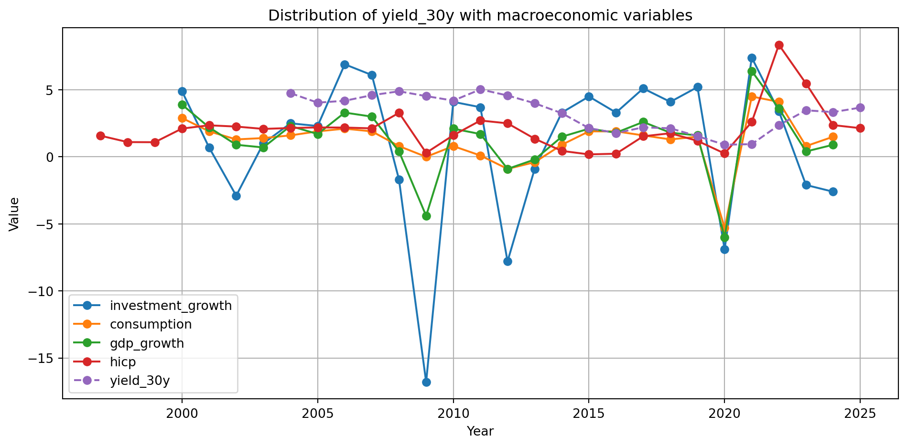
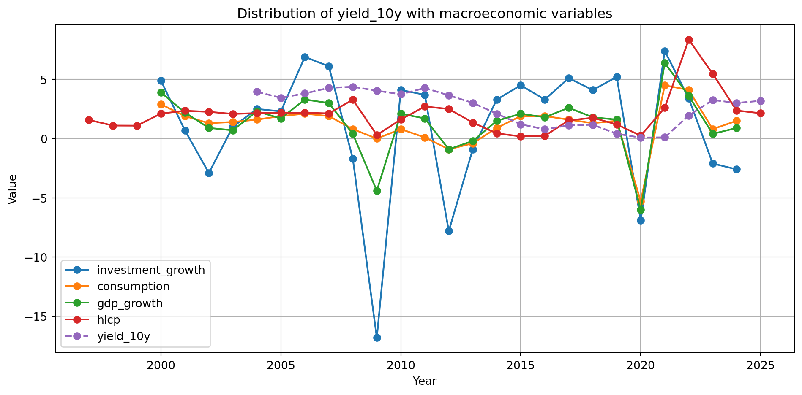
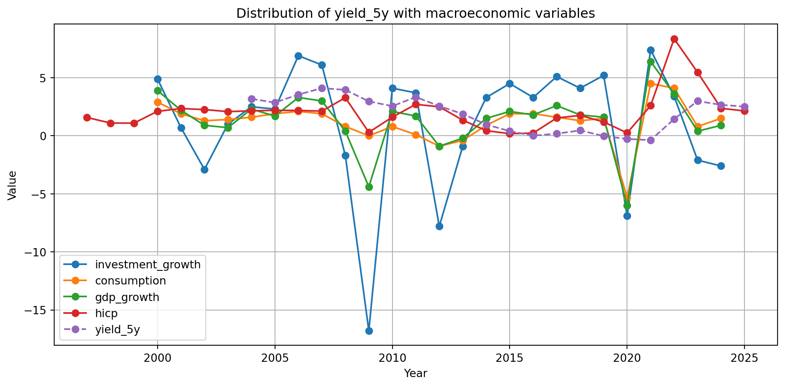
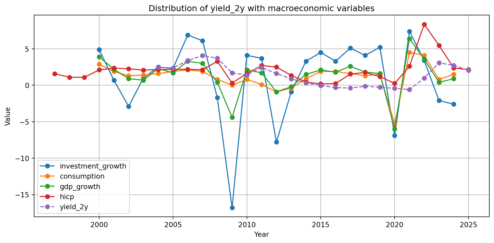
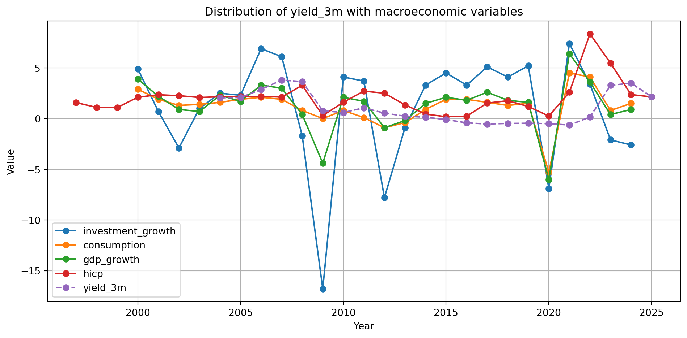
We can see that the level of the yield with shorter maturities are lower than higher maturities. We can also remark that yields seem to follow the dynamics of inflation, but the adjustment is not instantaneous and occurs with a lag.
macro_cols = ["investment_growth", "consumption", "gdp_growth", "hicp", "spread_30y_vs_3m"]
for col in macro_cols:
df[col] = pd.to_numeric(df[col], errors="coerce")
df["year"] = df["date"].dt.year
df_annual = df.groupby("year")[macro_cols].mean()
print(df_annual.head())
plt.figure(figsize=(10, 5))
for col in macro_cols:
plt.plot(df_annual.index, df_annual[col], marker="o", label=col)
plt.xlabel("Year")
plt.ylabel("Value")
plt.title("Distribution of the spread 30y vs 3m with macroeconomics variables")
plt.grid(True)
plt.legend()
plt.tight_layout()
plt.show() investment_growth consumption gdp_growth hicp spread_30y_vs_3m
year
1997 NaN NaN NaN 1.575000 NaN
1998 NaN NaN NaN 1.100000 NaN
1999 NaN NaN NaN 1.091667 NaN
2000 4.9 2.9 3.9 2.108333 NaN
2001 0.7 1.9 2.2 2.350000 NaN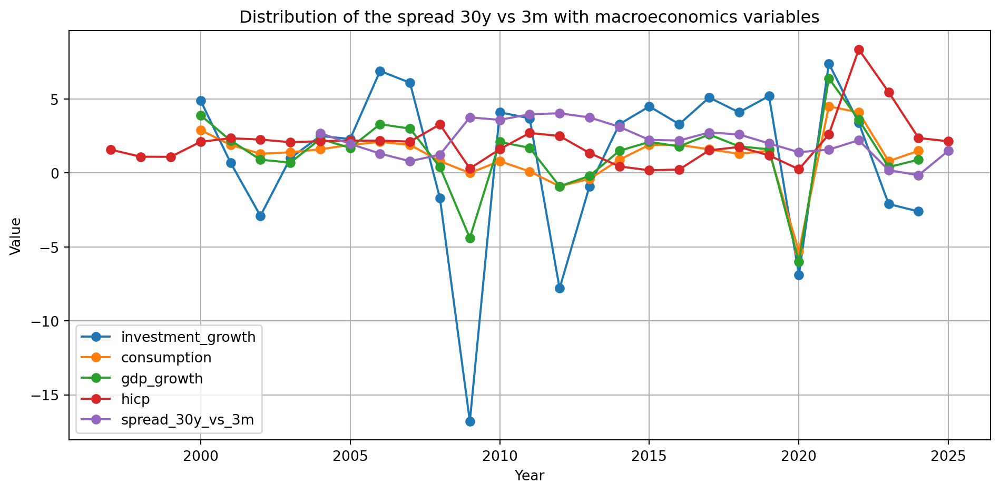
macro_cols = ["investment_growth", "consumption", "gdp_growth", "hicp", "spread_2y_vs_3m"]
for col in macro_cols:
df[col] = pd.to_numeric(df[col], errors="coerce")
df["year"] = df["date"].dt.year
df_annual = df.groupby("year")[macro_cols].mean()
print(df_annual.head())
plt.figure(figsize=(10, 5))
for col in macro_cols:
plt.plot(df_annual.index, df_annual[col], marker="o", label=col)
plt.xlabel("Year")
plt.ylabel("Value")
plt.title("Distribution of the spread 2y vs 3m with macroeconomics variables")
plt.grid(True)
plt.legend()
plt.tight_layout()
plt.show() investment_growth consumption gdp_growth hicp spread_2y_vs_3m
year
1997 NaN NaN NaN 1.575000 NaN
1998 NaN NaN NaN 1.100000 NaN
1999 NaN NaN NaN 1.091667 NaN
2000 4.9 2.9 3.9 2.108333 NaN
2001 0.7 1.9 2.2 2.350000 NaN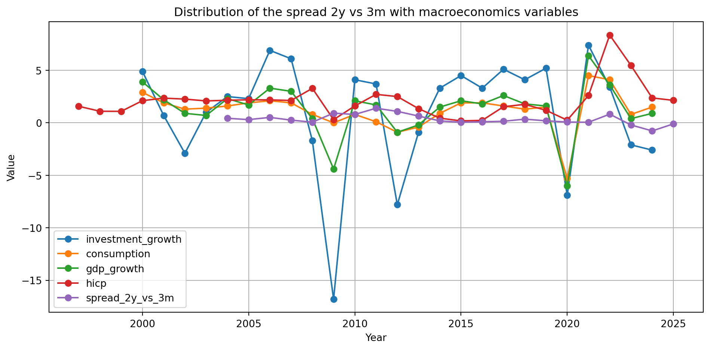
After plotting the yield spreads, neither the 30-year minus 3-month spread nor the 2-year minus 3-month spread shows a clear relationship with the other macroeconomic variables.
Now we move to the analysis section. It is organized into two parts: (i) The three factors construction : the level, the slope and the curvature of the yield curve (Svensson Model) and (ii) linear regressions using these three paramaters.
In the first part of the analysis, we rely on the framework proposed by Huang (2020), who shows that the dynamics of the yield curve can be well summarized by three factors: level, slope (steepness), and curvature.
In this project, we adopt an empirical implementation of this framework by constructing proxies for the level, slope, and curvature directly from observed zero-coupon yield. Following Akhtaruzzaman and Shamsuddin (2017), who demonstrate that empirical proxies calculated directly from zero-coupon yields are highly close to the factors estimated with the Nelson-Siegel model, we construct our measures using this empirical approach.
Since our yield curves data are already estimated by the European Central Bank using the Svensson model which produces smooth, zero-coupon yields we do not re-estimate a Nelson-Siegel model on already-modeled data. Instead, we compute the three factors directly from the available yields at different maturities, following the empirical proxy definitions used in the paper from Diebold and Li (2006):
This approach is particularly appropriate given that our data is already the result of the Svensson model.
Therefore, in the following code, we compute these three factors on a monthly basis. Since our ECB yield curve data are available at daily frequency, we first aggregate them to monthly averages to reduce noise and obtain a smoother representation of the yield curve. For each month, we calculate the level, slope, and curvature using the 3-month, 2-year, and 10-year zero-coupon yields.
df = data_clean.set_index("date").sort_index()
yield_cols = ["yield_3m", "yield_2y", "yield_10y", "yield_30y"]
for c in yield_cols:
df[c] = pd.to_numeric(df[c], errors="coerce")
#To aggregate to have a monthly frequency
df_m = df[yield_cols].resample("ME").mean()
# The 3 Factors : Level, slope and curvature
df_m["level"] = df_m["yield_10y"]
df_m["slope"] = df_m["yield_3m"] - df_m["yield_10y"]
df_m["curvature"] = (
2 * df_m["yield_2y"]
- (df_m["yield_10y"] + df_m["yield_3m"])
)
print(df_m[["level", "slope", "curvature"]].describe()) level slope curvature
count 255.000000 255.000000 255.000000
mean 2.543300 -1.499967 -0.840392
std 1.478751 1.098349 0.562478
min -0.199116 -3.602030 -1.860544
25% 1.128260 -2.310789 -1.322096
50% 3.089482 -1.362381 -0.860251
75% 3.815413 -0.656412 -0.429094
max 4.774601 0.930317 0.528862fig, axes = plt.subplots(3, 1, figsize=(12, 9), sharex=True)
axes[0].plot(df_m.index, df_m["level"])
axes[0].set_title("Level Factor over time")
axes[0].grid(True)
axes[1].plot(df_m.index, df_m["slope"])
axes[1].axhline(0, linestyle="--", linewidth=1)
axes[1].set_title("Slope Factor over time")
axes[1].grid(True)
axes[2].plot(df_m.index, df_m["curvature"])
axes[2].axhline(0, linestyle="--", linewidth=1)
axes[2].set_title("Curvature Factor over time")
axes[2].grid(True)
plt.tight_layout()
plt.show()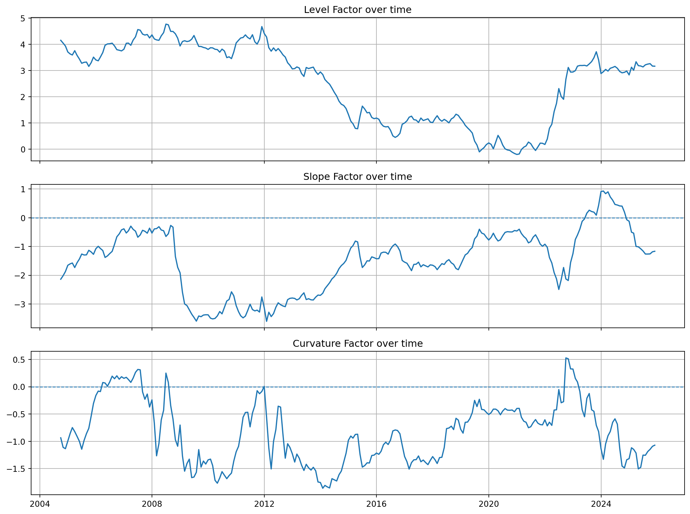
The decomposition of the monthy Euro-aera yield curve provides us more inshights about the dynamics of the curve. Firstly, concerning the level, which reflects long-run maturities yield Afonso and Martins (2010) we have an average value of 2.6% but with significant variations over time, proxied by a 10-year zero-coupon yield. For the slope that is defined difference between the 3-month and the 10-year yields is negtive on average which is consistant with the economic theory. However, the presence of positive values for the slope factor during certain periods reveals episodes of yield curve flattening or inversion. Finally, the last one is the curvature, reflecting the medium-term componant Afonso and Martins (2010) and is on average negative.
After having examine the three factors that describe a yield curve, we will now examine how the macroeconomic variables can have a significant impact on these three factors. To do, so we decide to conduct simple linear regressions between the three factors and the macroeconomic variables from our database. To do it we will aggregate also the macroeconomic variabls with a monthly frequency to be in line with the monthly frequency of three factors.
The following code tests the impact of monetary shock on the yield curve factors. Here we do not only consider the current ECB deposit facility rate, but the last three month changes in the ECB rates to summarize the monetary policy trend over a short-term horizon. And as the effects of monetary policy are not instantaneous we will do a linear regression with one lag of one month.
df_daily = data_clean.set_index("date").sort_index()
policy_col = "deposit_rate_ecb"
df_daily[policy_col] = pd.to_numeric(df_daily[policy_col], errors="coerce")
# ECB rate in monthly frequancy / end of each month
df_policy_m = df_daily[[policy_col]].resample("ME").last().ffill()
print("Nb obs policy mensuel:", len(df_policy_m))
print("Nb non-NaN policy mensuel:", df_policy_m[policy_col].notna().sum())
# Merge with df
df_test = df_m[["level", "slope", "curvature"]].join(df_policy_m, how="inner")
print("Nb obs après join:", len(df_test))
print("NaN deposit_rate_ecb après join:", df_test[policy_col].isna().sum())
# Shock 3 montsh + 1 month lag
df_test["d_policy_3m"] = df_test[policy_col].diff(3)
df_test["d_policy_3m_lag1"] = df_test["d_policy_3m"].shift(1)
df_reg = df_test.dropna(subset=["d_policy_3m_lag1", "level", "slope", "curvature"]).copy()
print("Nb obs for the regression:", len(df_reg))
print("Period for the regression:", df_reg.index.min(), "->", df_reg.index.max())
# OLS Regressions
for factor in ["level", "slope", "curvature"]:
Y = df_reg[factor]
X = sm.add_constant(df_reg["d_policy_3m_lag1"])
model = sm.OLS(Y, X).fit(cov_type="HAC", cov_kwds={"maxlags": 6})
print("\n" + "=" * 70)
print(f"{factor.upper()} ~ Δ deposit_rate_ecb (3m) lag1")
print("=" * 70)
print(model.summary())Nb obs policy mensuel: 348
Nb non-NaN policy mensuel: 324
Nb obs après join: 348
NaN deposit_rate_ecb après join: 24
Nb obs for the regression: 255
Period for the regression: 2004-09-30 00:00:00 -> 2025-11-30 00:00:00
======================================================================
LEVEL ~ Δ deposit_rate_ecb (3m) lag1
======================================================================
OLS Regression Results
==============================================================================
Dep. Variable: level R-squared: 0.000
Model: OLS Adj. R-squared: -0.004
Method: Least Squares F-statistic: 0.01082
Date: Thu, 18 Dec 2025 Prob (F-statistic): 0.917
Time: 22:52:42 Log-Likelihood: -461.07
No. Observations: 255 AIC: 926.1
Df Residuals: 253 BIC: 933.2
Df Model: 1
Covariance Type: HAC
====================================================================================
coef std err z P>|z| [0.025 0.975]
------------------------------------------------------------------------------------
const 2.5427 0.242 10.495 0.000 2.068 3.018
d_policy_3m_lag1 0.0474 0.455 0.104 0.917 -0.845 0.940
==============================================================================
Omnibus: 259.436 Durbin-Watson: 0.013
Prob(Omnibus): 0.000 Jarque-Bera (JB): 24.590
Skew: -0.398 Prob(JB): 4.57e-06
Kurtosis: 1.704 Cond. No. 2.81
==============================================================================
Notes:
[1] Standard Errors are heteroscedasticity and autocorrelation robust (HAC) using 6 lags and without small sample correction
======================================================================
SLOPE ~ Δ deposit_rate_ecb (3m) lag1
======================================================================
OLS Regression Results
==============================================================================
Dep. Variable: slope R-squared: 0.068
Model: OLS Adj. R-squared: 0.065
Method: Least Squares F-statistic: 7.862
Date: Thu, 18 Dec 2025 Prob (F-statistic): 0.00544
Time: 22:52:42 Log-Likelihood: -376.23
No. Observations: 255 AIC: 756.5
Df Residuals: 253 BIC: 763.5
Df Model: 1
Covariance Type: HAC
====================================================================================
coef std err z P>|z| [0.025 0.975]
------------------------------------------------------------------------------------
const -1.5094 0.170 -8.860 0.000 -1.843 -1.176
d_policy_3m_lag1 0.8041 0.287 2.804 0.005 0.242 1.366
==============================================================================
Omnibus: 7.180 Durbin-Watson: 0.040
Prob(Omnibus): 0.028 Jarque-Bera (JB): 4.808
Skew: -0.186 Prob(JB): 0.0904
Kurtosis: 2.440 Cond. No. 2.81
==============================================================================
Notes:
[1] Standard Errors are heteroscedasticity and autocorrelation robust (HAC) using 6 lags and without small sample correction
======================================================================
CURVATURE ~ Δ deposit_rate_ecb (3m) lag1
======================================================================
OLS Regression Results
==============================================================================
Dep. Variable: curvature R-squared: 0.246
Model: OLS Adj. R-squared: 0.243
Method: Least Squares F-statistic: 18.53
Date: Thu, 18 Dec 2025 Prob (F-statistic): 2.39e-05
Time: 22:52:42 Log-Likelihood: -178.57
No. Observations: 255 AIC: 361.1
Df Residuals: 253 BIC: 368.2
Df Model: 1
Covariance Type: HAC
====================================================================================
coef std err z P>|z| [0.025 0.975]
------------------------------------------------------------------------------------
const -0.8496 0.071 -11.892 0.000 -0.990 -0.710
d_policy_3m_lag1 0.7819 0.182 4.305 0.000 0.426 1.138
==============================================================================
Omnibus: 16.784 Durbin-Watson: 0.195
Prob(Omnibus): 0.000 Jarque-Bera (JB): 6.624
Skew: 0.066 Prob(JB): 0.0364
Kurtosis: 2.221 Cond. No. 2.81
==============================================================================
Notes:
[1] Standard Errors are heteroscedasticity and autocorrelation robust (HAC) using 6 lags and without small sample correctionAccording these first regressions, the ECB deposit rate (monetary policy tool) do not affect the level of the Euro-aera yield curve (not significant). However, we have found that ECB deposit rate has an impact on its curvature and its slope. Indeed, an increase of the level of the ECB deposit rate increases the curvature (impact the medium-term yield) and the slope of the Euro-aera yield curve.
infl_col = "hicp"
df_daily[infl_col] = pd.to_numeric(df_daily[infl_col], errors="coerce")
# Inflation for monthly frequency, same method used for the ECB deposit rate
df_infl_m = df_daily[[infl_col]].resample("ME").last().ffill()
print("Nb obs inflation:", len(df_infl_m))
print("Nb non-NaN inlfation:", df_infl_m[infl_col].notna().sum())
df_test_inf = df_m[["level", "slope", "curvature"]].join(df_infl_m, how="inner")
print("Nb obs after join:", len(df_test_inf))
print("NaN hicp after join:", df_test_inf[infl_col].isna().sum())
#Variation on 3 months and 1 lag
df_test_inf["d_hicp_3m"] = df_test_inf[infl_col].diff(3)
df_test_inf["d_hicp_3m_lag1"] = df_test_inf["d_hicp_3m"].shift(1)
df_reg_inf = df_test_inf.dropna(subset=["d_hicp_3m_lag1", "level", "slope", "curvature"]).copy()
print("Nb obs utilisables pour régression:", len(df_reg_inf))
print("Période regression:", df_reg_inf.index.min(), "->", df_reg_inf.index.max())
#OLS Regression
for factor in ["level", "slope", "curvature"]:
Y = df_reg_inf[factor]
X = sm.add_constant(df_reg_inf["d_hicp_3m_lag1"])
model = sm.OLS(Y, X).fit(cov_type="HAC", cov_kwds={"maxlags": 6})
print("\n" + "=" * 70)
print(f"{factor.upper()} ~ Δ HICP (3m) lag1 ")
print("=" * 70)
print(model.summary())Nb obs inflation: 348
Nb non-NaN inlfation: 348
Nb obs after join: 348
NaN hicp after join: 0
Nb obs utilisables pour régression: 255
Période regression: 2004-09-30 00:00:00 -> 2025-11-30 00:00:00
======================================================================
LEVEL ~ Δ HICP (3m) lag1
======================================================================
OLS Regression Results
==============================================================================
Dep. Variable: level R-squared: 0.029
Model: OLS Adj. R-squared: 0.025
Method: Least Squares F-statistic: 3.000
Date: Thu, 18 Dec 2025 Prob (F-statistic): 0.0845
Time: 22:52:42 Log-Likelihood: -457.31
No. Observations: 255 AIC: 918.6
Df Residuals: 253 BIC: 925.7
Df Model: 1
Covariance Type: HAC
==================================================================================
coef std err z P>|z| [0.025 0.975]
----------------------------------------------------------------------------------
const 2.5421 0.236 10.764 0.000 2.079 3.005
d_hicp_3m_lag1 -0.3268 0.189 -1.732 0.083 -0.697 0.043
==============================================================================
Omnibus: 134.542 Durbin-Watson: 0.028
Prob(Omnibus): 0.000 Jarque-Bera (JB): 20.451
Skew: -0.348 Prob(JB): 3.62e-05
Kurtosis: 1.800 Cond. No. 1.30
==============================================================================
Notes:
[1] Standard Errors are heteroscedasticity and autocorrelation robust (HAC) using 6 lags and without small sample correction
======================================================================
SLOPE ~ Δ HICP (3m) lag1
======================================================================
OLS Regression Results
==============================================================================
Dep. Variable: slope R-squared: 0.020
Model: OLS Adj. R-squared: 0.016
Method: Least Squares F-statistic: 1.080
Date: Thu, 18 Dec 2025 Prob (F-statistic): 0.300
Time: 22:52:42 Log-Likelihood: -382.64
No. Observations: 255 AIC: 769.3
Df Residuals: 253 BIC: 776.4
Df Model: 1
Covariance Type: HAC
==================================================================================
coef std err z P>|z| [0.025 0.975]
----------------------------------------------------------------------------------
const -1.5007 0.175 -8.594 0.000 -1.843 -1.158
d_hicp_3m_lag1 -0.2021 0.194 -1.039 0.299 -0.583 0.179
==============================================================================
Omnibus: 19.249 Durbin-Watson: 0.033
Prob(Omnibus): 0.000 Jarque-Bera (JB): 10.377
Skew: -0.319 Prob(JB): 0.00558
Kurtosis: 2.245 Cond. No. 1.30
==============================================================================
Notes:
[1] Standard Errors are heteroscedasticity and autocorrelation robust (HAC) using 6 lags and without small sample correction
======================================================================
CURVATURE ~ Δ HICP (3m) lag1
======================================================================
OLS Regression Results
==============================================================================
Dep. Variable: curvature R-squared: 0.011
Model: OLS Adj. R-squared: 0.007
Method: Least Squares F-statistic: 0.9231
Date: Thu, 18 Dec 2025 Prob (F-statistic): 0.338
Time: 22:52:42 Log-Likelihood: -213.15
No. Observations: 255 AIC: 430.3
Df Residuals: 253 BIC: 437.4
Df Model: 1
Covariance Type: HAC
==================================================================================
coef std err z P>|z| [0.025 0.975]
----------------------------------------------------------------------------------
const -0.8401 0.085 -9.855 0.000 -1.007 -0.673
d_hicp_3m_lag1 0.0773 0.080 0.961 0.337 -0.080 0.235
==============================================================================
Omnibus: 21.540 Durbin-Watson: 0.118
Prob(Omnibus): 0.000 Jarque-Bera (JB): 10.876
Skew: 0.318 Prob(JB): 0.00435
Kurtosis: 2.214 Cond. No. 1.30
==============================================================================
Notes:
[1] Standard Errors are heteroscedasticity and autocorrelation robust (HAC) using 6 lags and without small sample correctionAccording to the results obtained, we can conclude that at a 5% confidence level, the HICP index do not have significant impact on the three factors of the Euro-Aera yield curve. However, for the level HICP is marginally significant with a 10% confidence level, with a negative coeffieicent indicating that an increase in inflation is associated with a decrease in long-term yields.
def macro_shock_regression(df_m, data_clean, macro_col, label):
df_daily = data_clean.set_index("date").sort_index()
df_daily[macro_col] = pd.to_numeric(df_daily[macro_col], errors="coerce")
# From daily frequency to monthly frequency
df_macro_m = df_daily[[macro_col]].resample("ME").last().ffill()
print(f"\n--- {label} ---")
print("Nb obs macro monthly:", len(df_macro_m))
print("Nb non-NaN macro monthly:", df_macro_m[macro_col].notna().sum())
df_test = df_m[["level", "slope", "curvature"]].join(df_macro_m, how="inner")
print("Nb obs après join:", len(df_test))
print("NaN après join:", df_test[macro_col].isna().sum())
df_test[f"d_{macro_col}_3m"] = df_test[macro_col].diff(3)
df_test[f"d_{macro_col}_3m_lag1"] = df_test[f"d_{macro_col}_3m"].shift(1)
df_reg = df_test.dropna(
subset=[f"d_{macro_col}_3m_lag1", "level", "slope", "curvature"]
).copy()
print("Nb obs for regression :", len(df_reg))
print("Time regression:", df_reg.index.min(), "->", df_reg.index.max())
# OLS
for factor in ["level", "slope", "curvature"]:
Y = df_reg[factor]
X = sm.add_constant(df_reg[f"d_{macro_col}_3m_lag1"])
model = sm.OLS(Y, X).fit(
cov_type="HAC",
cov_kwds={"maxlags": 6}
)
print("\n" + "=" * 70)
print(f"{factor.upper()} ~ Δ {label} (3m) lag1 [HAC]")
print("=" * 70)
print(model.summary())
macro_shock_regression(df_m, data_clean, "gdp_growth", "GDP growth")
macro_shock_regression(df_m, data_clean, "investment_growth", "Investment growth")
macro_shock_regression(df_m, data_clean, "consumption", "Consumption growth")
--- GDP growth ---
Nb obs macro monthly: 348
Nb non-NaN macro monthly: 312
Nb obs après join: 348
NaN après join: 36
Nb obs for regression : 255
Time regression: 2004-09-30 00:00:00 -> 2025-11-30 00:00:00
======================================================================
LEVEL ~ Δ GDP growth (3m) lag1 [HAC]
======================================================================
OLS Regression Results
==============================================================================
Dep. Variable: level R-squared: 0.005
Model: OLS Adj. R-squared: 0.001
Method: Least Squares F-statistic: 0.3225
Date: Thu, 18 Dec 2025 Prob (F-statistic): 0.571
Time: 22:52:42 Log-Likelihood: -460.40
No. Observations: 255 AIC: 924.8
Df Residuals: 253 BIC: 931.9
Df Model: 1
Covariance Type: HAC
========================================================================================
coef std err z P>|z| [0.025 0.975]
----------------------------------------------------------------------------------------
const 2.5424 0.240 10.581 0.000 2.071 3.013
d_gdp_growth_3m_lag1 -0.0560 0.099 -0.568 0.570 -0.249 0.137
==============================================================================
Omnibus: 230.672 Durbin-Watson: 0.017
Prob(Omnibus): 0.000 Jarque-Bera (JB): 24.407
Skew: -0.405 Prob(JB): 5.01e-06
Kurtosis: 1.719 Cond. No. 1.93
==============================================================================
Notes:
[1] Standard Errors are heteroscedasticity and autocorrelation robust (HAC) using 6 lags and without small sample correction
======================================================================
SLOPE ~ Δ GDP growth (3m) lag1 [HAC]
======================================================================
OLS Regression Results
==============================================================================
Dep. Variable: slope R-squared: 0.000
Model: OLS Adj. R-squared: -0.004
Method: Least Squares F-statistic: 0.01265
Date: Thu, 18 Dec 2025 Prob (F-statistic): 0.911
Time: 22:52:42 Log-Likelihood: -385.23
No. Observations: 255 AIC: 774.5
Df Residuals: 253 BIC: 781.5
Df Model: 1
Covariance Type: HAC
========================================================================================
coef std err z P>|z| [0.025 0.975]
----------------------------------------------------------------------------------------
const -1.5001 0.177 -8.481 0.000 -1.847 -1.153
d_gdp_growth_3m_lag1 -0.0070 0.062 -0.112 0.910 -0.128 0.114
==============================================================================
Omnibus: 13.393 Durbin-Watson: 0.029
Prob(Omnibus): 0.001 Jarque-Bera (JB): 7.010
Skew: -0.205 Prob(JB): 0.0300
Kurtosis: 2.299 Cond. No. 1.93
==============================================================================
Notes:
[1] Standard Errors are heteroscedasticity and autocorrelation robust (HAC) using 6 lags and without small sample correction
======================================================================
CURVATURE ~ Δ GDP growth (3m) lag1 [HAC]
======================================================================
OLS Regression Results
==============================================================================
Dep. Variable: curvature R-squared: 0.004
Model: OLS Adj. R-squared: -0.000
Method: Least Squares F-statistic: 0.4561
Date: Thu, 18 Dec 2025 Prob (F-statistic): 0.500
Time: 22:52:42 Log-Likelihood: -214.14
No. Observations: 255 AIC: 432.3
Df Residuals: 253 BIC: 439.4
Df Model: 1
Covariance Type: HAC
========================================================================================
coef std err z P>|z| [0.025 0.975]
----------------------------------------------------------------------------------------
const -0.8407 0.085 -9.851 0.000 -1.008 -0.673
d_gdp_growth_3m_lag1 -0.0175 0.026 -0.675 0.499 -0.068 0.033
==============================================================================
Omnibus: 21.471 Durbin-Watson: 0.119
Prob(Omnibus): 0.000 Jarque-Bera (JB): 10.994
Skew: 0.324 Prob(JB): 0.00410
Kurtosis: 2.217 Cond. No. 1.93
==============================================================================
Notes:
[1] Standard Errors are heteroscedasticity and autocorrelation robust (HAC) using 6 lags and without small sample correction
--- Investment growth ---
Nb obs macro monthly: 348
Nb non-NaN macro monthly: 312
Nb obs après join: 348
NaN après join: 36
Nb obs for regression : 255
Time regression: 2004-09-30 00:00:00 -> 2025-11-30 00:00:00
======================================================================
LEVEL ~ Δ Investment growth (3m) lag1 [HAC]
======================================================================
OLS Regression Results
==============================================================================
Dep. Variable: level R-squared: 0.003
Model: OLS Adj. R-squared: -0.001
Method: Least Squares F-statistic: 0.2087
Date: Thu, 18 Dec 2025 Prob (F-statistic): 0.648
Time: 22:52:42 Log-Likelihood: -460.72
No. Observations: 255 AIC: 925.4
Df Residuals: 253 BIC: 932.5
Df Model: 1
Covariance Type: HAC
===============================================================================================
coef std err z P>|z| [0.025 0.975]
-----------------------------------------------------------------------------------------------
const 2.5421 0.241 10.557 0.000 2.070 3.014
d_investment_growth_3m_lag1 -0.0199 0.044 -0.457 0.648 -0.105 0.065
==============================================================================
Omnibus: 253.984 Durbin-Watson: 0.015
Prob(Omnibus): 0.000 Jarque-Bera (JB): 24.675
Skew: -0.403 Prob(JB): 4.38e-06
Kurtosis: 1.706 Cond. No. 3.99
==============================================================================
Notes:
[1] Standard Errors are heteroscedasticity and autocorrelation robust (HAC) using 6 lags and without small sample correction
======================================================================
SLOPE ~ Δ Investment growth (3m) lag1 [HAC]
======================================================================
OLS Regression Results
==============================================================================
Dep. Variable: slope R-squared: 0.003
Model: OLS Adj. R-squared: -0.001
Method: Least Squares F-statistic: 0.1563
Date: Thu, 18 Dec 2025 Prob (F-statistic): 0.693
Time: 22:52:42 Log-Likelihood: -384.87
No. Observations: 255 AIC: 773.7
Df Residuals: 253 BIC: 780.8
Df Model: 1
Covariance Type: HAC
===============================================================================================
coef std err z P>|z| [0.025 0.975]
-----------------------------------------------------------------------------------------------
const -1.5009 0.176 -8.514 0.000 -1.846 -1.155
d_investment_growth_3m_lag1 -0.0149 0.038 -0.395 0.693 -0.089 0.059
==============================================================================
Omnibus: 12.682 Durbin-Watson: 0.031
Prob(Omnibus): 0.002 Jarque-Bera (JB): 6.896
Skew: -0.212 Prob(JB): 0.0318
Kurtosis: 2.314 Cond. No. 3.99
==============================================================================
Notes:
[1] Standard Errors are heteroscedasticity and autocorrelation robust (HAC) using 6 lags and without small sample correction
======================================================================
CURVATURE ~ Δ Investment growth (3m) lag1 [HAC]
======================================================================
OLS Regression Results
==============================================================================
Dep. Variable: curvature R-squared: 0.005
Model: OLS Adj. R-squared: 0.001
Method: Least Squares F-statistic: 0.5233
Date: Thu, 18 Dec 2025 Prob (F-statistic): 0.470
Time: 22:52:42 Log-Likelihood: -213.93
No. Observations: 255 AIC: 431.9
Df Residuals: 253 BIC: 438.9
Df Model: 1
Covariance Type: HAC
===============================================================================================
coef std err z P>|z| [0.025 0.975]
-----------------------------------------------------------------------------------------------
const -0.8410 0.085 -9.884 0.000 -1.008 -0.674
d_investment_growth_3m_lag1 -0.0102 0.014 -0.723 0.469 -0.038 0.017
==============================================================================
Omnibus: 21.078 Durbin-Watson: 0.122
Prob(Omnibus): 0.000 Jarque-Bera (JB): 11.025
Skew: 0.330 Prob(JB): 0.00404
Kurtosis: 2.224 Cond. No. 3.99
==============================================================================
Notes:
[1] Standard Errors are heteroscedasticity and autocorrelation robust (HAC) using 6 lags and without small sample correction
--- Consumption growth ---
Nb obs macro monthly: 348
Nb non-NaN macro monthly: 312
Nb obs après join: 348
NaN après join: 36
Nb obs for regression : 255
Time regression: 2004-09-30 00:00:00 -> 2025-11-30 00:00:00
======================================================================
LEVEL ~ Δ Consumption growth (3m) lag1 [HAC]
======================================================================
OLS Regression Results
==============================================================================
Dep. Variable: level R-squared: 0.008
Model: OLS Adj. R-squared: 0.004
Method: Least Squares F-statistic: 0.4204
Date: Thu, 18 Dec 2025 Prob (F-statistic): 0.517
Time: 22:52:42 Log-Likelihood: -460.08
No. Observations: 255 AIC: 924.2
Df Residuals: 253 BIC: 931.2
Df Model: 1
Covariance Type: HAC
=========================================================================================
coef std err z P>|z| [0.025 0.975]
-----------------------------------------------------------------------------------------
const 2.5432 0.240 10.600 0.000 2.073 3.013
d_consumption_3m_lag1 -0.0949 0.146 -0.648 0.517 -0.382 0.192
==============================================================================
Omnibus: 181.915 Durbin-Watson: 0.018
Prob(Omnibus): 0.000 Jarque-Bera (JB): 23.927
Skew: -0.418 Prob(JB): 6.37e-06
Kurtosis: 1.754 Cond. No. 1.38
==============================================================================
Notes:
[1] Standard Errors are heteroscedasticity and autocorrelation robust (HAC) using 6 lags and without small sample correction
======================================================================
SLOPE ~ Δ Consumption growth (3m) lag1 [HAC]
======================================================================
OLS Regression Results
==============================================================================
Dep. Variable: slope R-squared: 0.000
Model: OLS Adj. R-squared: -0.004
Method: Least Squares F-statistic: 0.01554
Date: Thu, 18 Dec 2025 Prob (F-statistic): 0.901
Time: 22:52:42 Log-Likelihood: -385.24
No. Observations: 255 AIC: 774.5
Df Residuals: 253 BIC: 781.6
Df Model: 1
Covariance Type: HAC
=========================================================================================
coef std err z P>|z| [0.025 0.975]
-----------------------------------------------------------------------------------------
const -1.5000 0.177 -8.484 0.000 -1.846 -1.153
d_consumption_3m_lag1 0.0081 0.065 0.125 0.901 -0.119 0.135
==============================================================================
Omnibus: 13.435 Durbin-Watson: 0.029
Prob(Omnibus): 0.001 Jarque-Bera (JB): 7.028
Skew: -0.206 Prob(JB): 0.0298
Kurtosis: 2.298 Cond. No. 1.38
==============================================================================
Notes:
[1] Standard Errors are heteroscedasticity and autocorrelation robust (HAC) using 6 lags and without small sample correction
======================================================================
CURVATURE ~ Δ Consumption growth (3m) lag1 [HAC]
======================================================================
OLS Regression Results
==============================================================================
Dep. Variable: curvature R-squared: 0.004
Model: OLS Adj. R-squared: 0.000
Method: Least Squares F-statistic: 0.6248
Date: Thu, 18 Dec 2025 Prob (F-statistic): 0.430
Time: 22:52:42 Log-Likelihood: -214.09
No. Observations: 255 AIC: 432.2
Df Residuals: 253 BIC: 439.3
Df Model: 1
Covariance Type: HAC
=========================================================================================
coef std err z P>|z| [0.025 0.975]
-----------------------------------------------------------------------------------------
const -0.8404 0.085 -9.852 0.000 -1.008 -0.673
d_consumption_3m_lag1 -0.0258 0.033 -0.790 0.429 -0.090 0.038
==============================================================================
Omnibus: 21.182 Durbin-Watson: 0.119
Prob(Omnibus): 0.000 Jarque-Bera (JB): 10.711
Skew: 0.314 Prob(JB): 0.00472
Kurtosis: 2.217 Cond. No. 1.38
==============================================================================
Notes:
[1] Standard Errors are heteroscedasticity and autocorrelation robust (HAC) using 6 lags and without small sample correctionConcerning the last macroeconomic variables tested : the consumption, investment and GDP growth. We have found that all these three macro variables do not have a significant impct on the level, slope and curvature of the Euro-Aera yield curve.
ciss_col = "ciss"
#Daily frequncy to monthly frequency
df_ciss = df_daily[[ciss_col]].resample("ME").last().ffill()
print("Nb obs CISS monthly:", len(df_ciss))
print("Nb non-NaN CISS:", df_ciss[ciss_col].notna().sum())
df_test = df_m[["level", "slope", "curvature"]].join(df_ciss, how="inner")
print("Nb obs after join:", len(df_test))
print("NaN CISS after join:", df_test[ciss_col].isna().sum())
df_test["d_ciss_3m"] = df_test[ciss_col].diff(3)
df_test["d_ciss_3m_lag1"] = df_test["d_ciss_3m"].shift(1)
df_reg = df_test.dropna(
subset=["d_ciss_3m_lag1", "level", "slope", "curvature"]
).copy()
print("Nb obs for the regressions:", len(df_reg))
print("Time regression:", df_reg.index.min(), "->", df_reg.index.max())
# OLS
for factor in ["level", "slope", "curvature"]:
Y = df_reg[factor]
X = sm.add_constant(df_reg["d_ciss_3m_lag1"])
model = sm.OLS(Y, X).fit(
cov_type="HAC",
cov_kwds={"maxlags": 6}
)
print("\n" + "=" * 70)
print(f"{factor.upper()} ~ Δ CISS (3m) lag1 [HAC]")
print("=" * 70)
print(model.summary())Nb obs CISS monthly: 348
Nb non-NaN CISS: 324
Nb obs after join: 348
NaN CISS after join: 24
Nb obs for the regressions: 255
Time regression: 2004-09-30 00:00:00 -> 2025-11-30 00:00:00
======================================================================
LEVEL ~ Δ CISS (3m) lag1 [HAC]
======================================================================
OLS Regression Results
==============================================================================
Dep. Variable: level R-squared: 0.000
Model: OLS Adj. R-squared: -0.004
Method: Least Squares F-statistic: 0.03947
Date: Thu, 18 Dec 2025 Prob (F-statistic): 0.843
Time: 22:52:42 Log-Likelihood: -461.06
No. Observations: 255 AIC: 926.1
Df Residuals: 253 BIC: 933.2
Df Model: 1
Covariance Type: HAC
==================================================================================
coef std err z P>|z| [0.025 0.975]
----------------------------------------------------------------------------------
const 2.5434 0.241 10.535 0.000 2.070 3.017
d_ciss_3m_lag1 -0.1497 0.753 -0.199 0.843 -1.627 1.327
==============================================================================
Omnibus: 254.530 Durbin-Watson: 0.013
Prob(Omnibus): 0.000 Jarque-Bera (JB): 24.530
Skew: -0.398 Prob(JB): 4.71e-06
Kurtosis: 1.706 Cond. No. 7.93
==============================================================================
Notes:
[1] Standard Errors are heteroscedasticity and autocorrelation robust (HAC) using 6 lags and without small sample correction
======================================================================
SLOPE ~ Δ CISS (3m) lag1 [HAC]
======================================================================
OLS Regression Results
==============================================================================
Dep. Variable: slope R-squared: 0.004
Model: OLS Adj. R-squared: 0.000
Method: Least Squares F-statistic: 0.9935
Date: Thu, 18 Dec 2025 Prob (F-statistic): 0.320
Time: 22:52:42 Log-Likelihood: -384.74
No. Observations: 255 AIC: 773.5
Df Residuals: 253 BIC: 780.6
Df Model: 1
Covariance Type: HAC
==================================================================================
coef std err z P>|z| [0.025 0.975]
----------------------------------------------------------------------------------
const -1.5002 0.176 -8.518 0.000 -1.845 -1.155
d_ciss_3m_lag1 0.5489 0.551 0.997 0.319 -0.530 1.628
==============================================================================
Omnibus: 11.265 Durbin-Watson: 0.040
Prob(Omnibus): 0.004 Jarque-Bera (JB): 6.218
Skew: -0.189 Prob(JB): 0.0447
Kurtosis: 2.335 Cond. No. 7.93
==============================================================================
Notes:
[1] Standard Errors are heteroscedasticity and autocorrelation robust (HAC) using 6 lags and without small sample correction
======================================================================
CURVATURE ~ Δ CISS (3m) lag1 [HAC]
======================================================================
OLS Regression Results
==============================================================================
Dep. Variable: curvature R-squared: 0.008
Model: OLS Adj. R-squared: 0.004
Method: Least Squares F-statistic: 3.726
Date: Thu, 18 Dec 2025 Prob (F-statistic): 0.0547
Time: 22:52:42 Log-Likelihood: -213.61
No. Observations: 255 AIC: 431.2
Df Residuals: 253 BIC: 438.3
Df Model: 1
Covariance Type: HAC
==================================================================================
coef std err z P>|z| [0.025 0.975]
----------------------------------------------------------------------------------
const -0.8405 0.085 -9.882 0.000 -1.007 -0.674
d_ciss_3m_lag1 0.3916 0.203 1.930 0.054 -0.006 0.789
==============================================================================
Omnibus: 17.869 Durbin-Watson: 0.132
Prob(Omnibus): 0.000 Jarque-Bera (JB): 10.104
Skew: 0.321 Prob(JB): 0.00640
Kurtosis: 2.267 Cond. No. 7.93
==============================================================================
Notes:
[1] Standard Errors are heteroscedasticity and autocorrelation robust (HAC) using 6 lags and without small sample correctionAccording to the results, for the three parameters tested (level, slope and curvature) we have a p-value above the 5%. However, for the curvature factor the p-value is above 5 % but below 10%. Therefore we can conclude that with a confidence level of 10%, the Composite Indicator of Systemic Stress is significative to explain the curvature of the yield curve.
# EUR/USD
euro_dol_col = "euro_dol"
df_daily[euro_dol_col] = pd.to_numeric(df_daily[euro_dol_col], errors="coerce")
# Montly Frequency
df_euro_dol = df_daily[[euro_dol_col]].resample("ME").last().ffill()
print("Nb obs EUR/USD monthly:", len(df_euro_dol))
print("Nb non-NaN EUR/USD:", df_euro_dol[euro_dol_col].notna().sum())
df_test = df_m[["level", "slope", "curvature"]].join(df_euro_dol, how="inner")
print("Nb obs after join:", len(df_test))
print("NaN EUR/USD after join:", df_test[euro_dol_col].isna().sum())
# Variations of the 3 months and 1 month lag
df_test["d_euro_dol_3m"] = df_test[euro_dol_col].diff(3)
df_test["d_euro_dol_3m_lag1"] = df_test["d_euro_dol_3m"].shift(1)
df_reg = df_test.dropna(
subset=["d_euro_dol_3m_lag1", "level", "slope", "curvature"]
).copy()
print("Nb obs utilisables pour régression:", len(df_reg))
print("Période regression:", df_reg.index.min(), "->", df_reg.index.max())
# OLS Regressions
for factor in ["level", "slope", "curvature"]:
Y = df_reg[factor]
X = sm.add_constant(df_reg["d_euro_dol_3m_lag1"])
model = sm.OLS(Y, X).fit(
cov_type="HAC",
cov_kwds={"maxlags": 6}
)
print("\n" + "=" * 70)
print(f"{factor.upper()} ~ Δ EUR/USD (3m) lag1 [HAC]")
print("=" * 70)
print(model.summary())Nb obs EUR/USD monthly: 348
Nb non-NaN EUR/USD: 324
Nb obs after join: 348
NaN EUR/USD after join: 24
Nb obs utilisables pour régression: 255
Période regression: 2004-09-30 00:00:00 -> 2025-11-30 00:00:00
======================================================================
LEVEL ~ Δ EUR/USD (3m) lag1 [HAC]
======================================================================
OLS Regression Results
==============================================================================
Dep. Variable: level R-squared: 0.005
Model: OLS Adj. R-squared: 0.001
Method: Least Squares F-statistic: 0.5650
Date: Thu, 18 Dec 2025 Prob (F-statistic): 0.453
Time: 22:52:42 Log-Likelihood: -460.47
No. Observations: 255 AIC: 924.9
Df Residuals: 253 BIC: 932.0
Df Model: 1
Covariance Type: HAC
======================================================================================
coef std err z P>|z| [0.025 0.975]
--------------------------------------------------------------------------------------
const 2.5465 0.241 10.586 0.000 2.075 3.018
d_euro_dol_3m_lag1 1.6820 2.238 0.752 0.452 -2.704 6.068
==============================================================================
Omnibus: 229.861 Durbin-Watson: 0.015
Prob(Omnibus): 0.000 Jarque-Bera (JB): 24.137
Skew: -0.397 Prob(JB): 5.74e-06
Kurtosis: 1.719 Cond. No. 16.5
==============================================================================
Notes:
[1] Standard Errors are heteroscedasticity and autocorrelation robust (HAC) using 6 lags and without small sample correction
======================================================================
SLOPE ~ Δ EUR/USD (3m) lag1 [HAC]
======================================================================
OLS Regression Results
==============================================================================
Dep. Variable: slope R-squared: 0.000
Model: OLS Adj. R-squared: -0.004
Method: Least Squares F-statistic: 0.01229
Date: Thu, 18 Dec 2025 Prob (F-statistic): 0.912
Time: 22:52:42 Log-Likelihood: -385.24
No. Observations: 255 AIC: 774.5
Df Residuals: 253 BIC: 781.6
Df Model: 1
Covariance Type: HAC
======================================================================================
coef std err z P>|z| [0.025 0.975]
--------------------------------------------------------------------------------------
const -1.4996 0.177 -8.490 0.000 -1.846 -1.153
d_euro_dol_3m_lag1 0.1820 1.642 0.111 0.912 -3.036 3.400
==============================================================================
Omnibus: 13.408 Durbin-Watson: 0.030
Prob(Omnibus): 0.001 Jarque-Bera (JB): 7.020
Skew: -0.206 Prob(JB): 0.0299
Kurtosis: 2.299 Cond. No. 16.5
==============================================================================
Notes:
[1] Standard Errors are heteroscedasticity and autocorrelation robust (HAC) using 6 lags and without small sample correction
======================================================================
CURVATURE ~ Δ EUR/USD (3m) lag1 [HAC]
======================================================================
OLS Regression Results
==============================================================================
Dep. Variable: curvature R-squared: 0.015
Model: OLS Adj. R-squared: 0.011
Method: Least Squares F-statistic: 1.637
Date: Thu, 18 Dec 2025 Prob (F-statistic): 0.202
Time: 22:52:42 Log-Likelihood: -212.67
No. Observations: 255 AIC: 429.3
Df Residuals: 253 BIC: 436.4
Df Model: 1
Covariance Type: HAC
======================================================================================
coef std err z P>|z| [0.025 0.975]
--------------------------------------------------------------------------------------
const -0.8382 0.085 -9.824 0.000 -1.005 -0.671
d_euro_dol_3m_lag1 1.1343 0.886 1.280 0.201 -0.603 2.872
==============================================================================
Omnibus: 22.588 Durbin-Watson: 0.124
Prob(Omnibus): 0.000 Jarque-Bera (JB): 9.982
Skew: 0.262 Prob(JB): 0.00680
Kurtosis: 2.185 Cond. No. 16.5
==============================================================================
Notes:
[1] Standard Errors are heteroscedasticity and autocorrelation robust (HAC) using 6 lags and without small sample correctionThe results indicate that changes in the EUR/USD exchange rate do not have a statistically significant impact on any of the three yield curve factors (level, slope, and curvature) at conventional confidence levels.
The aim of this project was to examine the potential impact of macroeconomic shocks on the yield curve of the eurozone. The project was organised into three main parts. Firstly, we constructed a database relevant to the project’s problem. In total, we compiled 14 different databases from the European Central Bank Data Portal and Eurostat.
Secondly, the project included a Data Exploration stage to provide an initial overview of the data. We plotted yield curves and macroeconomic variables over time, identifying the main crises in the eurozone and other variables such as the EUR/USD exchange rate and the composite indicator of systemic stress. Through the data exploration, we found evidence of an inverted yield curve in summer 2024, when the European Central Bank adopted a highly restrictive monetary policy with a deposit rate of around 4%. However, on average, we found that the yield curve was increasing, which is economically consistent (risk premium).
Third part of the project is composed of the econometric analaysis. Our analysis relies on the empirical paper of Diebold and Li (2006). We have first computed the three key parameters with a monthly frequency to describe the entire yield curve(level, slope and curvature). Then we have conducted several OLS regressions to determine the relationship between the factors and each of our macrovariables. For the regressions, we have decided to add a lag of 1 month, as markets cannot react instaneously to macroeconomic shocks. We have found that the ECB deposit rates has a significative impact on the curvature and the slope of the Euro-Aera yield curve. An increase of the ECB deposit rate impact postively the curvature and the slope. Additionnaly, we have highlighted that with a 10 % confidence level the Composite Indicator of Systemic Stress is significative to explain the curvature of the yield curve and that the HICP Index is signifant to explain the level of the yield curve.
According to the results of the analysis, we found that monetary policy does not impact the long-term yield. Rather, a restrictive monetary policy primarily reduces the slope (3m - 10 years), leading to a flatter yield curve. Additionally, the curvature is also significant, indicating that monetary policy impacts more medium-term maturities rather than shorter or longer ones.
Furthermore, the HICP index impacts the level of the yield curve with a 10% confidence interval, indicating that as inflation increases, the level of long-term maturtity yield decreases. Under the same level of confidence interval, an increase in the Composite Indicator of Systemic Stress primarily increases medium-term maturities yield rather than shorter or longer-term maturities. In short, monetary policy shocks are the most important macroeconomic drivers of the Euro-area yield curve.
However, this analysis has some limitations. First, for several macroeconomic variables, such as consumption, investment, and GDP growth, the data are only available at a low frequency. This limits the ability to capture all the relationship between macroeconomic shocks and the yield curve. Secondly, this analysis relies only on simple linear regressions, which may not be able to capture all the dynamics (e.g, non-liner relationship).
To pursue this analysis, a relevant model to add would be the Vector Auto-Regressive Model (VAR). The VAR model is an econometric model widely used in macroeconomics to analyse the interactions among multiple variables over time. This is ideal to study the transmission of macroeconomic shocks over time on the yield curve.